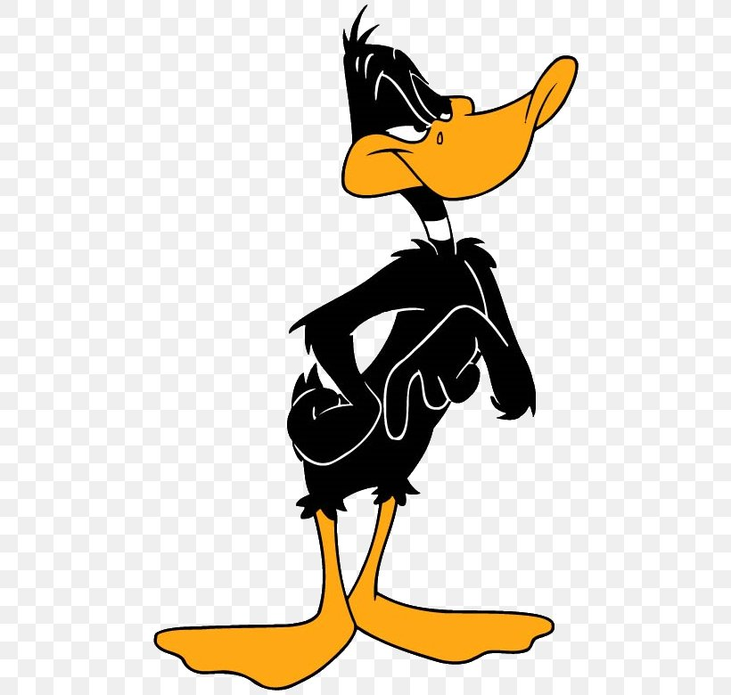
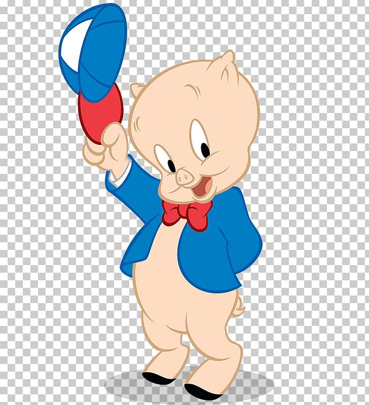
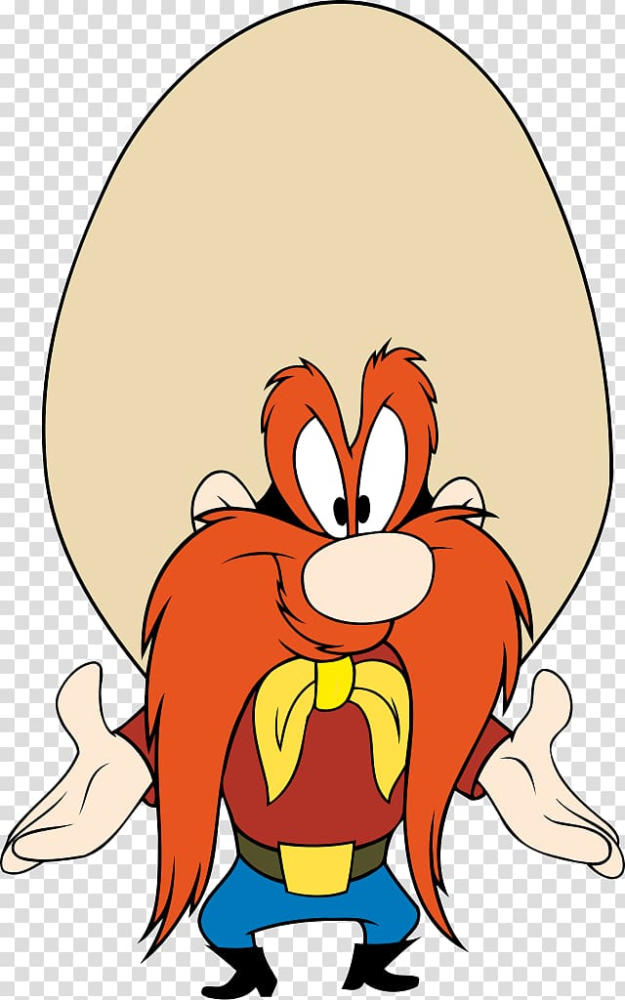

Looney Tunes fan page
Characters
Bug Bunny

Looney Tunes is an American media franchise produced and distributed by Warner Bros. The franchise began as a series of animated short films that originally ran from 1930 to 1969, alongside its spin-off series Merrie Melodies, during the golden age of American animation.
Daffy duck
Looney Tunes is an American media franchise produced and distributed by Warner Bros. The franchise began as a series of animated short films that originally ran from 1930 to 1969, alongside its spin-off series Merrie Melodies, during the golden age of American animation.
Characters
Porky Pig
Looney Tunes is an American media franchise produced and distributed by Warner Bros. The franchise began as a series of animated short films that originally ran from 1930 to 1969, alongside its spin-off series Merrie Melodies, during the golden age of American animation.
Characters
Yosemite Sam
Looney Tunes is an American media franchise produced and distributed by Warner Bros. The franchise began as a series of animated short films that originally ran from 1930 to 1969, alongside its spin-off series Merrie Melodies, during the golden age of American animation.